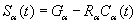
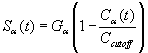
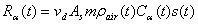
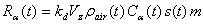

CONTAM allows you to define the generation, Ga, and removal, Ra, coefficients for some simple cases.
Constant Coefficient Model
The constant coefficient or general source/sink model uses the following equation:
|
 |
(15) |
where Sa is called the contaminant a "source strength". The CONTAM internal units for the terms in equation (16) are: Ca [kga / kgair], Ga, Sa [kga / s], and Ra [kgair / s]. You may express these values in a large number of units with automatic conversion to the internal values.
For a room air filtering device, G = 0.0 and R = f•e where f is the flow rate of the room air passing through the filter and e is the single pass removal efficiency of the device.
Pressure Driven Model
The pressure driven source/sink model is intended to model contaminant sources which are governed by the inside-outside pressure difference, such as radon or soil gas entry into a basement. In this case the source equation is:
|
|
(16) |
Cutoff Concentration Model
For volatile organic compounds the source equation is sometimes expressed in the form
|
 |
(17) |
where Ccutoff is the cutoff concentration at which emission ceases.
Decaying Source Model
Another source equation for volatile organic compounds is the exponentially decaying source which is expressed in the form

|
(18) |
where
Sa = the contaminant source strength,
Ga = the initial emission rate,
t = the time since the start of emission, and
tc = the decay time constant.
Boundary Layer Diffusion Controlled Model
The boundary layer diffusion controlled reversible source/sink model follows the descriptions presented by Axley 1991. The rate at which a contaminant is transferred into the sink is

|
(19) |
where
h = average film mass transfer coefficient over the sink,
r = film density of air, average of bulk & surface densities,
A = surface area of the adsorbent,
Ci = concentration in the air,
Cs = concentration in the adsorbent, and
k = Henry adsorption constant or partition coefficient.
Burst Source Model
A user-specified mass of contaminant is added to a zone in a single time step, effectively an instantaneous addition – nothing can be resolved at less than one time step.
Deposition Velocity Sink Model
The deposition velocity model provides for the input of a sink’s characteristic in the familiar term of deposition velocity. The deposition velocity model equation is:
|
 |
(20) |
where
Ra(t) = removal rate at time t
nd = deposition velocity
As = deposition surface area
m = element multiplier
rair(t) = density of air in the source zone at time t
Ca(t) = concentration of contaminant a at time t [Ma / Mair]
s(t) = schedule or control signal value at time t [-]
Deposition Rate Sink Model
The deposition rate model provides for the input of a sink’s characteristic in the familiar term of deposition or removal rate. The deposition rate model equation is:
|
 |
(21) |
where
kd = Deposition rate [1/T]
Vz = Zone volume [M3]
other terms are the same as for the Deposition Velocity Sink Model.